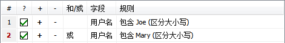

“筛选”是任一项目匹配或不匹配的规则(或规则的设定)。PasswordSafe 允许用户定义筛选与只显示项目匹配的一个特定筛选。可以定义一个筛选作为一个以前的查询或定义多个筛选， 命名它们并持续储存它们作为重复使用。 也可以筛选任一存储的除数据库外或外部的数据，作为共享一样的筛选交叉多个数据库。
定义一个筛选
要定义一个新筛选，选择查看->筛选->新建/编辑筛选菜单项目。下列对话框将被显示:
为了便于查看，每个筛选由一个或多个行，在每个行位置定义一个 规则给一个特定的字段。 条件式定义每个行可选择“和”与“或”关联前一行。该项允许定义下列各种筛选:
1.所有项目包含一个用户名“joe”或“Joe”或“JOE”

2.所有项目具有一个用户名“Joe”(精确的)创建在2008年5月1日之后

3.使用项目包含一个用户名“Joe”或“Mary”

为便于查看，筛选可任意组合。
下列是筛选表格栏目标识:
- “#”- 该列为行编号。为了方便而显示及不能修改。
- “?”- 勾选框在栏目中用以确定该行是否激活或禁用，只有激活的行被用于筛选。 单击勾选框启用/禁用行。
- “+”- 单击这里插入一个新行在下面。
- “-”- 单击这里删除当前行。注: 由于删除一个行是永久性的，可以只禁用而替代删除它。
- “和/或”- 该项允许用户确定与前一行结果的关系。
- “字段”- 选择想要的项目字段。例如: 用户名、标题、组、备注等。
- “规则”- 定义用户所选中字段的值。一旦选中一个字段，单击时将弹出一个对话框允许用户指定规则，选择需要哪个被显示于表格。